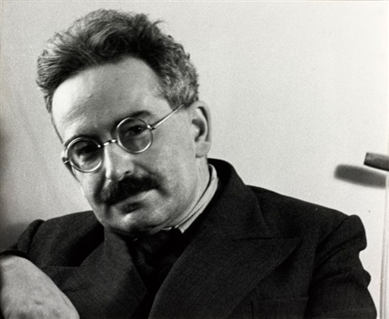
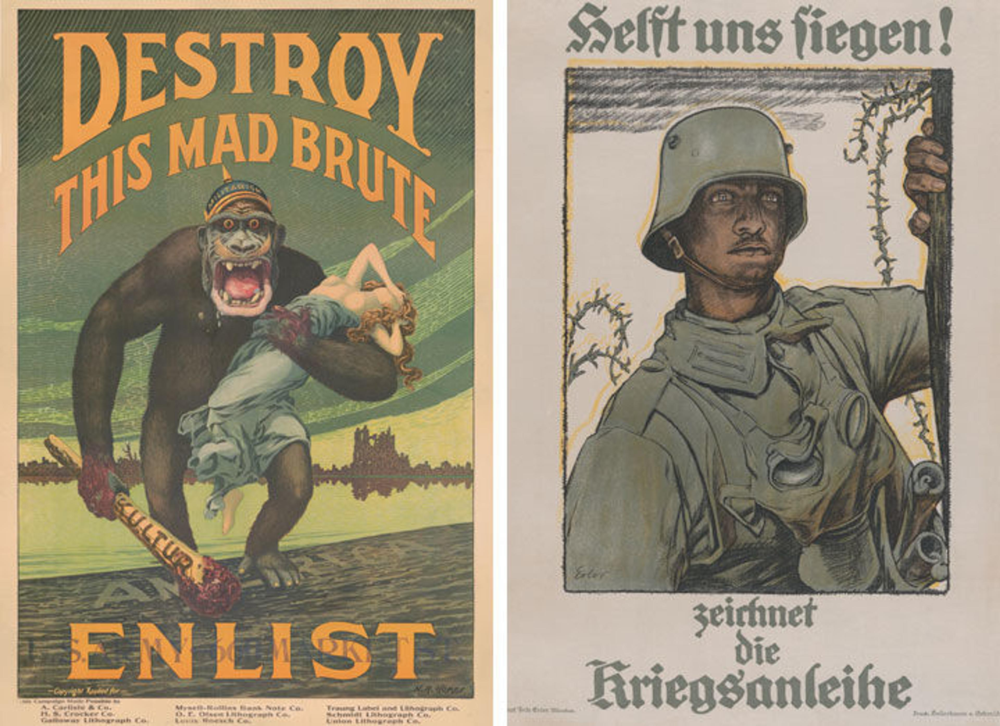

Chapter 5
In 1935, Walter Benjamin published a little essay titled Das Kunstwerk im Zeitalter seiner technischen Reproduzierbarkeit (The artwork in the age of mechanical reproduction). In this essay (what would become his most celebrated and influential), Benjamin analyses the uniqueness of the artwork, its being placed at a specific time and place. For this phenomenon, he introduces the concept of the aura of the traditional works of art. He argues that with the coming of the mechanical reproducability, the aesthetics of art becomes politicized.
A note on translation:
There is no real canonical English translation of this text. We've one we just found online. In the quotes below, we give page numbers to this text aside the section numbers.
Walter Benjamin (1892-1940) was a German-Jewish philosopher, cultural critic, and essayist, associated—somewhat loosely—with the Frankfurter Schule. He lived through a period of profound technological, political, and cultural upheaval: the rise of photography and film, mass newspapers, radio, fascism, and industrialised warfare.

Benjamin never held a stable academic position. Much of his work was written under precarious conditions, often in essayistic or fragmentary form. This marginal position is not incidental: Benjamin consistently wrote from within modern media culture rather than from a distance. He took popular forms seriously, especially film, photography, advertising, and mechanical reproduction: precisely those domains traditional aesthetics tended to dismiss, since this is more focussed on what is usually called the 'higher arts'.
His essay das Kunstwerk in Zeitalter seiner technischen Reproduzierbarkeit (The Work of Art in the Age of Mechanical Reproduction) (1936) is one of the most influential texts of twentieth‑century aesthetics. Benjamin wrote it while he was in exile in Paris – on the run for Nazi Germany. It first appeared in der Zeitschrift für Sozialforschung under the title L’œuvre d’art à l’époque de sa reproduction mécanisée.
It is not a lament for lost tradition, but an attempt to understand how new technologies reshape perception, experience, and politics. In it, Benjamin states that the mechanical reproducability of the artwork changes our very concept of art and the way we perceive art – especially when we talk about photography and film.
One can state that Benjamin's essay is focussed around three central concepts.
Benjamin starts with the observation that everything that man has made man can remake (Was Menschen gemacht hatten, das konnte immer von Menschen nachgemacht werden, p.10). This is especially relevant in the field of experimental archaeology, where researchers try to re-create artefacts of lost cultures, using only the tools that were available at that time.
There have also always been methods to re-create artefacts in a more mechanical manner. Benjamin uses the examples of Greek casting or pressing, but already the Egyptians used a mold to mass-produces small statues of Ushabti's in Faiance.
According to Benjamin, however, even the best reproduction is unable to reproduce its existence at a particula place and time. He introduces the concept of aura to describe this unique presence of a work of art, its embeddedness in tradition, ritual, and history.
Noch bei der höchstvollendeten Reproduktion fällt eines aus: das Hier und Jetzt des Kunstwerkes – sein einmaliges Dasein an dem Orte, an dem es sich befindet. [...] Man kann, was hier ausfällt, im Begriff der Aura zusammenfassen und sagen: was im Zeitalter der technische Reproduzierbarkeit des Kunstwerks verkümmert, das ist seine Aura. (p.14)
Aura involves distance — even when the object is physically close (think about Stendhal's promise of happiness). It is the experience of something that cannot be fully possessed or repeated. A painting in a church, a relic, or a singular artwork derives much of its meaning from this distance. Its authority depends on the fact that it is there and not somewhere else – that there is a relation between us, the work and its surroundings.
Mechanical reproduction fundamentally alters this relation. Photography and film detach the artwork from its original context. The work can be copied, circulated, enlarged, cropped, or replayed. The viewer no longer approaches the work; the work approaches the viewer.
Benjamin's crucial move is that aura is not simply destroyed. Rather, a specific mode of experience disappears. Aura names a historical relationship between humans, objects, and tradition — not an eternal essence of art.
Benjamin insists that reproduction does not merely diminish art; it changes its social function. Historically, art was bound to ritual—religious, magical, or ceremonial (ein Zauberinstrument, p.22). With reproduction, art shifts toward exhibition (Ausstellungswert, p.23): it is made to be seen, distributed, and consumed by many. This transformation changes how art is made and how it is perceived.
Film becomes Benjamin's central example. There are four fundamental differences between painting or theatre on the one hand, and film on the other:
Distraction is, however, not a defect. It is a new mode of perception appropriate to modern life, shaped by speed, shocks, and constant stimuli (something we will re-encounter when we will talk about the futurists). Architecture, cinema, and later media are absorbed habitually rather than attentively.
Benjamin thus treats media as training devices they educate perception, attention, and bodily response.
In the final movement of the essay, Benjamin makes his most explicit claim: the way that aesthetic changes is inseparable from politics. If technologies reorganise perception, then they also reorganise how reality appears, how authority is felt, and how collective experience is structured. Benjamin famously introduces an interesting contrast. He talks about the aestheticisation of politics (associated with fascism):
Der Faschismus versucht, die neu entstandenen proletarisierten Massen zu organisieren, ohne die Eigentumsverhältnisse, auf deren Beseitigung sie hindrängen, anzutasten. Er sieht sein Heil darin, die Massen zu ihrem Ausdruck kommen zu lassen. (p.47)

Benjamin's alternative to this fascistic turn would be the politization of the arts
Die Menschheit, die einst bei Homer ein Schauobject für die Olympischen Götter war, ist es nun für sich selbst geworden. Ihre Selbstentfremdung hat jenen Grad erreicht, der sie ihre eigene Vernichtung als ästhetischen Genuß ersten Ranges erlaben läßt. So steht es um die Ästhetisierung der Politik, welche der Faschismus betreibt, Der Kommunismus antwortet ihm mit der Politisierung der Kunst. (p.50)
The distinction is less about party politics than about who controls perception. Fascism, for Benjamin, turns politics into spectacle without changing social relations. Politicised art, by contrast, reveals and intervenes in those relations.
Even if Benjamin's historical examples feel distant, the underlying question remains urgent: who shapes the sensory conditions under which we live? That insight is, if anything, more relevant today than in 1936.